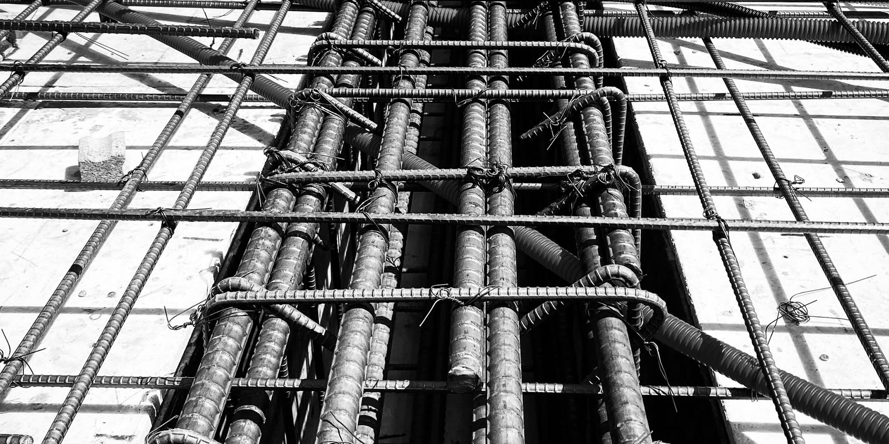
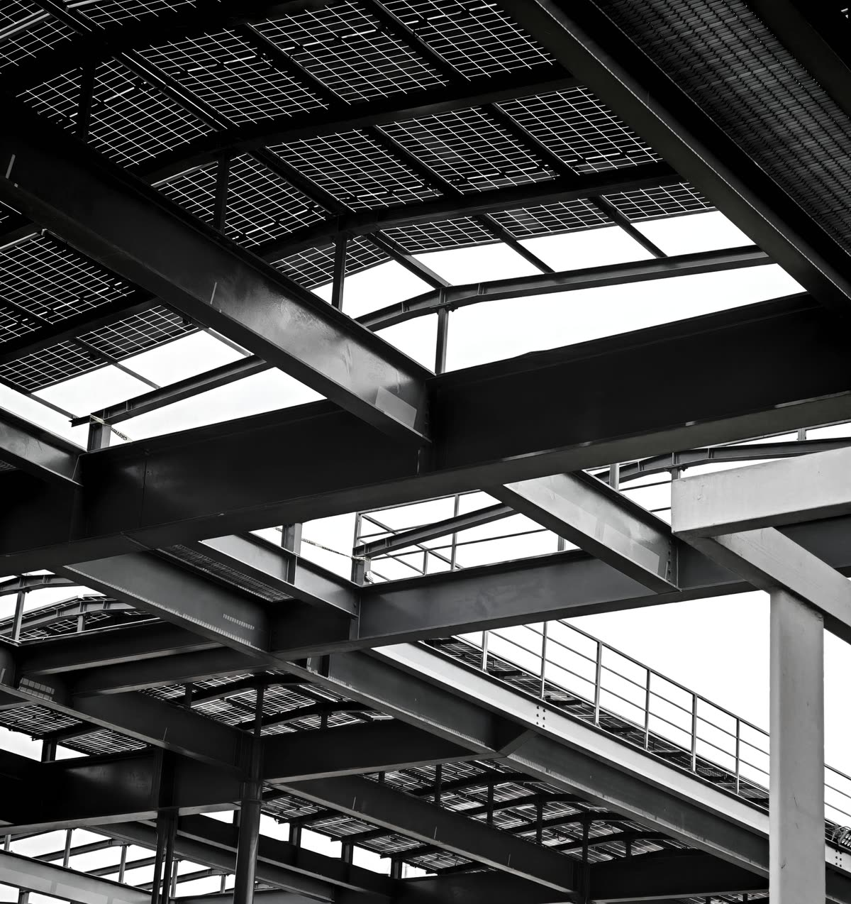

Ingenieurbüro für Tragwerksplanung
Statik, die trägt. Ihr Statiker in Mannheim – für Wohnbau, Industriebau und Tiefbau.
Dipl.-Ing. Denis Memic plant und berechnet Tragwerke für Bauherren, Architekten und Bauunternehmen: vom Wanddurchbruch im Altbau bis zur Produktionshalle. Präzise gerechnet, sauber gezeichnet, ohne versteckte Kosten.
- Projekt
- Ihr Bauvorhaben
- Planinhalt
- Querschnitt, schematisch
- Maßstab
- 1:100
- Nachweisberechtigt
- BW St-0556 · HE St-3515A-IngKH
- Büro
- iBM · Mannheim
- Stand
- 2026
- 17+Jahre Berufserfahrung als Statiker
- 2Nachweisberechtigungen Standsicherheit: Baden-Württemberg und Hessen
- 1:50Schal- und Bewehrungspläne, sauber ausgearbeitet
- 1Ansprechpartner vom Angebot bis zur Abnahme
Haltung
Gute Statik sieht man nicht. Man merkt sie daran, dass nichts reißt, nichts nachgibt und auf der Baustelle kein Kilo Stahl zu viel liegt. Dafür rechnen wir genau – und sprechen früh mit allen, die am Bau beteiligt sind.
Das Ingenieurbüro Memic ist inhabergeführt. Sie sprechen vom ersten Anruf bis zur Bewehrungsabnahme mit dem Ingenieur, der Ihr Tragwerk auch berechnet. Das hält die Wege kurz und die Angebote ehrlich: keine versteckten Kosten, keine Nachträge aus Bequemlichkeit.
Zum Profil- SitzMannheim
- EinsatzgebietMetropolregion Rhein-Neckar
- NachweisberechtigtBaden-Württemberg · Hessen
- Statiker seit2008
- Büro gegründet2025

Was später niemand mehr sieht, entscheidet über alles.
SymbolbildLeistungen
Was wir für Ihr Tragwerk tun
Von der ersten Vorbemessung bis zur Abnahme auf der Baustelle – alles, was ein Tragwerk braucht, um genehmigt, gebaut und sicher genutzt zu werden.
(01)Statik & Tragwerksplanung4
Das Herzstück: die statische Berechnung, mit der Ihr Bauvorhaben genehmigt und gebaut werden kann – für Neubau, Umbau und Bestand.
- Statische Berechnungen
- Schal- und Bewehrungspläne im Maßstab 1:50
- Konstruktionszeichnungen
- Tragwerksplanung für Neubau, Umbau, Aufstockung und Nutzungsänderung
(02)Konstruktiver Brandschutz2
Wie lange ein tragendes Bauteil im Brandfall hält, wird nachgewiesen – nicht geschätzt.
- Nachweise des konstruktiven Brandschutzes nach Eurocode
- Feuerwiderstand tragender Bauteile
(03)Bauphysik3
Die Nachweise, die für Bauantrag, Förderung und Verkauf gebraucht werden – aus demselben Büro wie die Statik.
- Wärmeschutznachweise nach GEG und für KfW-Förderung
- Energieausweise (dena-registriert)
- Schallschutznachweise nach DIN 4109
(04)Gutachten & Bewertungen4
Wenn ein Riss auftaucht, ein Gebäude anders genutzt werden soll oder vor dem Kauf Klarheit nötig ist.
- Gutachten zur Standsicherheit
- Sanierungskonzepte
- Tragwerksertüchtigung
- Tragfähigkeitsanalysen
(05)Bauüberwachung & Abnahmen2
Die beste Berechnung nützt nichts, wenn auf der Baustelle anders gebaut wird. Deshalb schauen wir selbst nach.
- Überwachung der Bauausführung
- Abnahmen, zum Beispiel der Bewehrung vor dem Betonieren
Bauaufgaben
Vom Einfamilienhaus bis zur Spundwand
Die Physik ist überall dieselbe, die Fragen sind es nicht. Vier Bereiche, in denen wir zu Hause sind.

-
03.1
Wohnbau
- Ein- und Mehrfamilienhäuser
- Neubau und Umbau
- Aufstockungen
- Wanddurchbrüche, Nutzungsänderungen
-
03.2
Gewerbe- & Industriebau
- Produktionshallen
- Stahlkonstruktionen
- Komplexe Anlagen
- Lastprüfung für PV-Anlagen auf Dächern
-
03.3
Tiefbau
- Spundwände und Trägerbohlwände
- Winkelstützwände, Schwerlastmauern
- Unterfangungen und Böschungen
- Tiefgründungen
-
03.4
Bestand & Denkmal
- Sanierung und Ertüchtigung
- Umbau im Bestand
- Tragwerke unter Denkmalschutz
Ablauf
Der Lastpfad – in fünf Schritten zum sicheren Tragwerk
-
01
Anfrage & Unterlagen
Sie schicken Pläne, Fotos oder eine kurze Beschreibung. Sie bekommen schnell eine erste Einschätzung und ein verbindliches Angebot.
-
02
Tragwerkskonzept
Gemeinsam mit Architekt oder Bauherr legen wir fest, wie das Gebäude trägt: Raster, Material, Gründung. Hier entscheidet sich, wie viel Material später verbaut wird.
-
03
Statische Berechnung
Jede Last wird verfolgt – vom Schnee auf dem Dach bis in den Baugrund. Das Ergebnis ist die prüffähige Statik für Ihren Bauantrag.
-
04
Ausführungspläne
Schal- und Bewehrungspläne im Maßstab 1:50, übersichtlich aufgebaut – damit auf der Baustelle niemand raten muss.
-
05
Bauüberwachung & Abnahme
Vor dem Betonieren prüfen wir die Bewehrung vor Ort. Erst wenn alles stimmt, geht es weiter.
Arbeitsweise
Genau gerechnet. Sauber gezeichnet. Ehrlich angeboten.
Keine Beispielbilder: Ausschnitte aus echten Ausführungsplänen des Büros für den Neubau eines Dreifamilienhauses, 2026. Ein Klick zeigt das ganze Blatt.
Angaben zum Bauherrn sind auf den Plänen unkenntlich gemacht.
-
01
Präzise gerechnet
Genaue Berechnungen statt pauschaler Reserven sparen Beton und Stahl – und damit bares Geld auf der Baustelle.
-
02
Sauber dokumentiert
Pläne im Maßstab 1:50 und übersichtlich strukturierte Unterlagen, die Prüfer und Polier gleichermaßen sofort verstehen.
-
03
Klare Angebote
Wettbewerbsfähige Preise ohne versteckte Kosten und ohne Zusatzkosten, die erst auf der Rechnung auftauchen.
-
04
Schnelle Antworten
Kurze Wege und moderne Software: Rückfragen von der Baustelle bleiben nicht tagelang liegen.
Profil
Denis Memic Dipl.-Ing., Tragwerksplaner
Denis Memic hat Bauingenieurwesen an der Universität Tuzla studiert und arbeitet seit 2008 als Statiker. 2015 kam er nach Deutschland, zuerst zur Halber GmbH in Braunschweig, danach sieben Jahre zu Goldbeck Südwest in Hirschberg an der Bergstraße. 2025 hat er in Mannheim sein eigenes Ingenieurbüro gegründet.
- Nachweisberechtigt Standsicherheit · Baden-Württemberg
- St-0556
- Nachweisberechtigt Standsicherheit · Hessen
- St-3515A-IngKH
- Energieausweise
- dena-registriert
- Berufshaftpflicht
- AIA AG · Düsseldorf
Werdegang
- 2004Studium BauingenieurwesenUniversität Tuzla
- 2008StatikerSirbegovic d.o.o., Gračanica
- 2012StatikerBaupartner d.o.o., Gračanica
- 2015TragwerksplanerHalber GmbH, Braunschweig
- 2018TragwerksplanerGoldbeck Südwest GmbH, Hirschberg
- 2025GründungIngenieurbüro Memic, Mannheim
Häufige Fragen
Gut zu wissen, bevor Sie bauen
Ihre Frage ist nicht dabei? Rufen Sie einfach an: 0621 43748994.
Wann brauche ich einen Statiker?
Immer dann, wenn tragende Bauteile neu entstehen oder verändert werden: beim Neubau, bei einer Aufstockung, beim Durchbruch einer tragenden Wand, bei neuen Gauben oder zusätzlichen Lasten wie einer Photovoltaikanlage. Für den Bauantrag ist der Standsicherheitsnachweis in der Regel Pflicht.
Darf ich eine Wand einfach entfernen?
Nur, wenn sie nicht tragend ist – und das sieht man einer Wand oft nicht an. Wir prüfen anhand der Pläne oder vor Ort, ob sie Lasten abträgt, und bemessen bei Bedarf einen Träger, der diese Lasten sicher übernimmt.
Welche Unterlagen brauchen Sie?
Für ein erstes Angebot reichen meist Grundrisse und Schnitte, alternativ Fotos und eine kurze Beschreibung. Bei Bestandsgebäuden helfen alte Baupläne oder eine vorhandene Statik.
Was kostet eine Statik?
Das hängt von Art und Größe des Vorhabens ab. Nach einem Blick auf Ihre Unterlagen erhalten Sie ein verbindliches Angebot – ohne versteckte Kosten.
Arbeiten Sie auch außerhalb von Mannheim?
Ja. Das Büro liegt in Mannheim, gearbeitet wird in der Metropolregion Rhein-Neckar, etwa in Heidelberg, Schwetzingen, Weinheim oder Viernheim. Nachweisberechtigt für Standsicherheit ist Denis Memic in Baden-Württemberg und Hessen.
Erstellen Sie auch Energieausweise?
Ja, dena-registriert. Dazu kommen Wärmeschutznachweise nach GEG, auch für KfW-Förderanträge, sowie Schallschutznachweise nach DIN 4109.
Kontakt